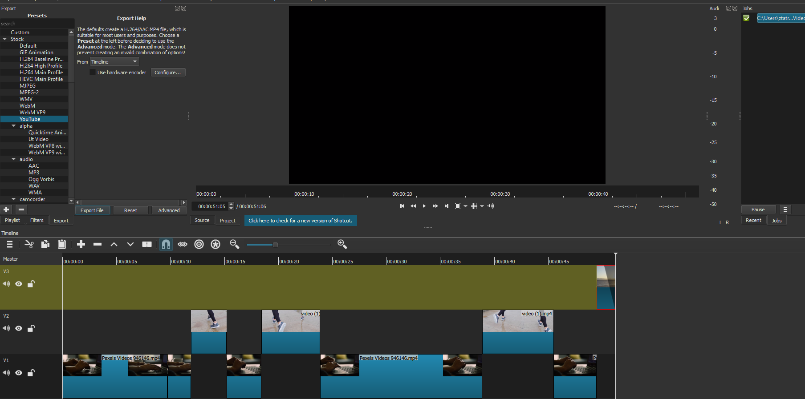

I created a video about a person writing a story thinking about what truely matters to them. While writing they think about the person they want to see and it cuts to the person running and ends with them meeting with open arms.

Sources: